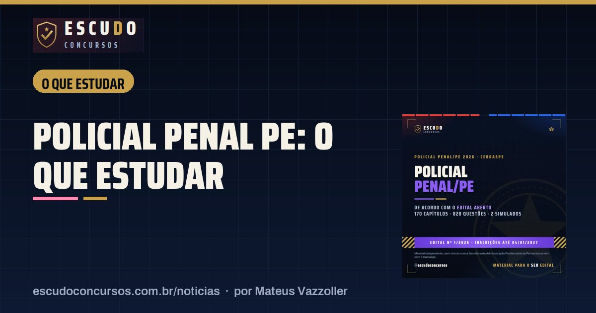

Policial Penal PE: o que estudar nos Conhecimentos Específicos, as 40 das 60 questões do Cebraspe
O que estudarPublicado em 16 de novembro de 2026 · por Mateus Vazzoller, ESCUDO Concursos

Dois terços da prova objetiva de Policial Penal de Pernambuco estão nos Conhecimentos Específicos: são 40 das 60 questões, a P2, cada uma valendo 1 ponto, sobre sete disciplinas que vão do Direito Administrativo à Lei de Execução Penal. O edital não diz quantas questões cabem a cada disciplina, mas cita pelo número quase todas as leis que vão cair. Este guia organiza essas leis disciplina por disciplina, para você estudar o que o futuro policial penal da SEAP/PE vai aplicar dentro da unidade prisional.
| Cargo | Policial Penal do Estado de Pernambuco (SEAP/PE), 700 vagas, R$ 5.667,92 |
|---|---|
| Banca | Cebraspe, múltipla escolha com cinco opções |
| Conhecimentos Específicos | 40 questões de 1 ponto, em 7 disciplinas |
| Para não ser eliminado | 30 pontos nas objetivas (P1 e P2 somadas), sem mínimo por prova |
| Prova | 21/03/2027 (domingo), à tarde |
| Inscrições | 12/11/2026 a 04/01/2027, até 18h; isenção até 22/11/2026 |
Como a P2 entra na nota?
A P2 tem 40 questões de múltipla escolha com cinco opções, sem desconto por erro (item 8.11.2). Ela soma com as 20 questões da P1, de Conhecimentos Gerais, e é eliminado quem fizer menos de 30 pontos no total das objetivas (item 8.11.4). Não há nota mínima por prova, então um bom resultado na P2 sozinho já cobre o mínimo, mas o corte real vem depois: só os 2.094 mais bem classificados da ampla concorrência masculina, e as quantidades fixadas para as demais listas, seguem para a correção da discursiva.
No empate, depois da idade, vence quem tem a maior nota na P2 (item 15.1). Os Específicos são, portanto, o primeiro desempate de prova.
As 7 disciplinas e as leis que o edital cita
| Disciplina | O que o edital cita pelo número | O que pede além da lei |
|---|---|---|
| Execução Penal | Lei nº 7.210/1984 (LEP); Lei nº 11.671/2008 e Decreto nº 6.877/2009 (Sistema Penitenciário Federal); Portaria Interministerial MS/MJ nº 1/2014 (saúde no sistema prisional); Decreto nº 7.626/2011 (educação); Portaria Interministerial MJ/SPM nº 210/2014 (mulheres presas e egressas); Resoluções CNPCP nº 1/2014, 3/2009 e 9/2009 | Nada: é só norma, para ler na letra |
| Legislação Especial | 19 leis, entre elas Drogas (11.343/2006), Abuso de Autoridade (13.869/2019), Tortura, ECA, Desarmamento (10.826/2003), Organizações Criminosas (12.850/2013), Marco Legal do Combate ao Crime Organizado (15.358/2026), Interceptação Telefônica (9.296/1996), Lavagem (9.613/1998) e Crimes Hediondos (8.072/1990) | Na interceptação, o edital pede também conceito e provas ilícitas |
| Direito Penal | Código Penal, sem lei extra | Parte geral completa e crimes contra a pessoa, o patrimônio, a dignidade sexual, a incolumidade pública, a paz pública, a fé pública e a administração pública |
| Direito Processual Penal | Código de Processo Penal | Inquérito, ação penal, provas (busca e apreensão, cadeia de custódia), prisões, cautelares, sentença e procedimento comum |
| Direito Administrativo | Leis nº 11.079/2004 (PPP), 8.987/1995 (concessões) e 9.784/1999 (processo administrativo) | Atos, poderes, bens públicos, licitações, contratos, controle, agentes públicos e improbidade |
| Direito Constitucional | Emenda Constitucional nº 103/2019 | Teoria da Constituição, direitos fundamentais, organização do Estado e dos Poderes, controle de constitucionalidade, tributação, orçamento e ordem social |
| Direitos Humanos e Participação Social | Decreto nº 678/1992 (Pacto de São José), Declaração Universal de 1948, Decreto nº 7.037/2009 (PNDH-3) e Regras mínimas da ONU para o tratamento de pessoas presas | Conselhos da LEP: CNPCP (arts. 62 a 64), penitenciários (arts. 69 e 70) e da comunidade (arts. 80 e 81) |
Repare que a LEP aparece duas vezes: inteira em Execução Penal e, nos artigos dos conselhos, em Direitos Humanos. Estude esses artigos uma vez só, já sabendo que servem às duas disciplinas.
Os 3 números de lei errados no edital
O Edital nº 1 traz três números que não batem com a lei que o título descreve. Estude a lei certa e acompanhe as retificações no site do Cebraspe:
| Como está no edital | A lei de verdade |
|---|---|
| Crimes de tortura, "Lei nº 9.455/1965" | Lei nº 9.455/1997 |
| Estatuto da Criança e do Adolescente, "Lei nº 8.069/1970" | Lei nº 8.069/1990 |
| "Lei Complementar estadual nº 487/2022" (P1, Legislação Estadual) | Trata de cargos de Promotor de Justiça; o edital não esclarece qual norma pretendia |
O terceiro erro está na P1, mas vale anotar aqui porque afeta o mesmo estudo de legislação.
Em que ordem estudar?
Comece pelo que é do dia a dia do cargo e que tem menos doutrina: Execução Penal e Legislação Especial são leitura de lei, e o Cebraspe costuma trocar uma palavra do artigo para montar as opções erradas. Depois venha para o bloco penal (Penal e Processo Penal) e deixe Administrativo e Constitucional, os programas mais longos, para quando a base já estiver firme. Uma divisão possível do tempo da P2:
| Disciplina | Parte do tempo da P2 | Por quê |
|---|---|---|
| Execução Penal | 20% | Maior disciplina na prova de 2022 e o centro do trabalho na unidade |
| Legislação Especial | 20% | 19 leis, muitas com crimes e penas para decorar |
| Direito Processual Penal | 15% | Prisões e provas, que o policial penal aplica |
| Direito Penal | 15% | Parte geral e crimes em espécie |
| Direito Constitucional | 10% | Programa extenso; foco em direitos fundamentais e segurança pública |
| Direito Administrativo | 10% | Foco em atos, poderes, agentes e processo disciplinar |
| Direitos Humanos | 10% | Tratados e conselhos da LEP |
A divisão é uma sugestão, não uma regra do edital. O curso Polícia Penal PE segue esse programa disciplina por disciplina, com a legislação vigente na data de publicação do edital e questões de cinco alternativas no estilo do Cebraspe.
Curso ESCUDO Policial Penal de Pernambuco em PDF: 170 capítulos e 820 questões, de acordo com o edital aberto, 2 simulados de 60 questões. De R$ 47 por R$ 37 com o cupom PPPE37 até 04/01/2027.
Ver o curso
Perguntas frequentes
Quantas questões de Conhecimentos Específicos tem a prova de Policial Penal PE?
São 40 questões de múltipla escolha com cinco opções, cada uma valendo 1 ponto, de um total de 60 nas duas provas objetivas.
O edital diz quantas questões caem de cada disciplina?
Não. O item 20.2.4 só lista os conteúdos das sete disciplinas, sem fixar o número de questões de cada uma.
Existe nota mínima nos Conhecimentos Específicos?
Não. O edital exige 30 pontos no total das duas provas objetivas e não fixa mínimo por prova.
Leia também
- O que estudarBanestes Técnico Bancário: o que estudar em Conhecimentos Bancários, bloco a bloco, para a prova da FCC
16 de novembro de 2026 · Conhecimentos Bancários do Banestes: os temas do Anexo IV em 6 blocos, a parte de seguros que muita gente pula e o peso das 15 questões na nota da FCC.
- O que estudarO que estudar para Agente Educativo de Aparecida de Goiânia: os 6 itens de Específicos e a conta dos 50 pontos
14 de novembro de 2026 · Agente Educativo de Aparecida: os 6 itens de Conhecimentos Específicos, o Português de nível médio e a conta dos 50 pontos na prova do Verbena/UFG.
Guia completo do concurso: edital, vagas e o que cai · Mais notícias e dicas de concursos